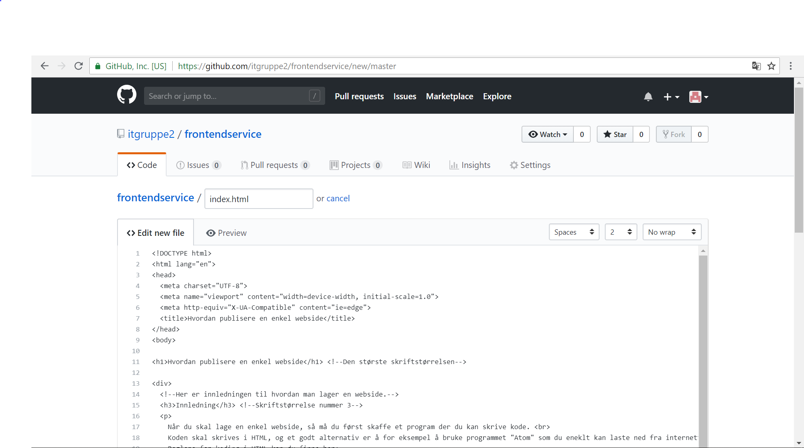
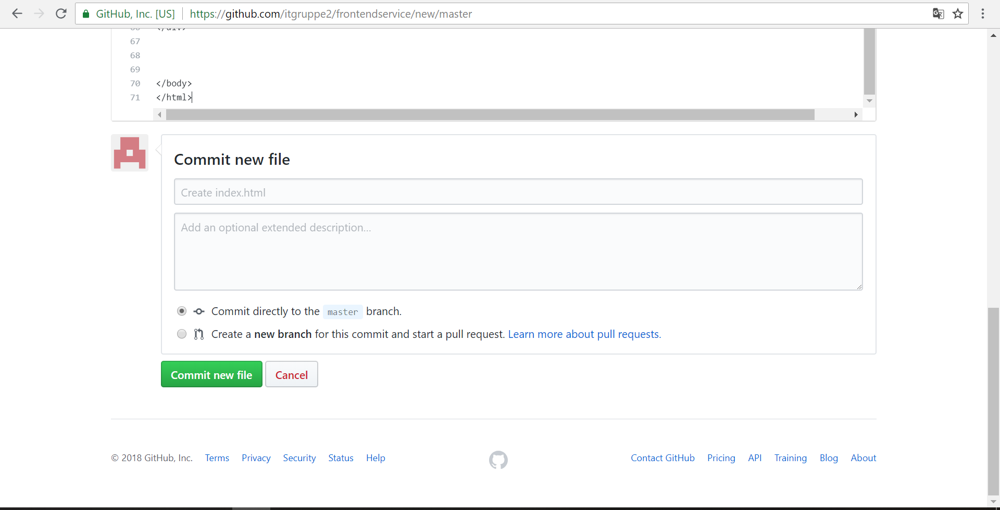
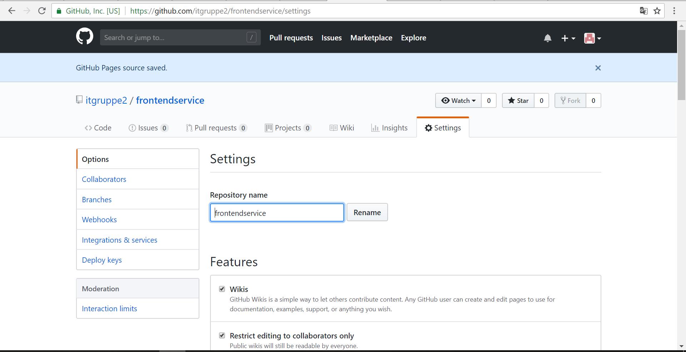
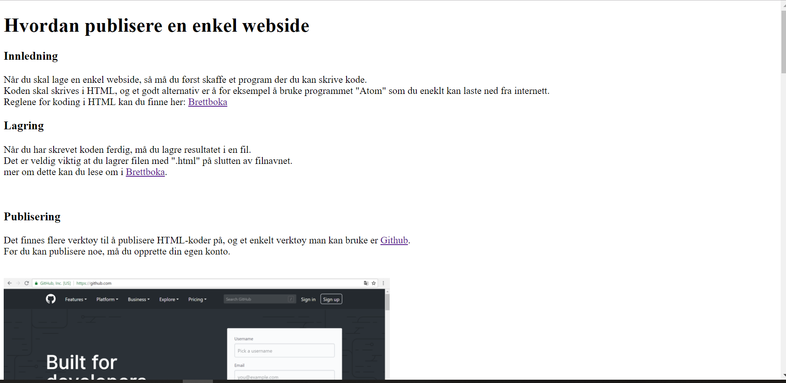

Når du skal lage en enkel webside, så må du først skaffe et program der du kan skrive kode.
Koden skal skrives i HTML, og et godt alternativ er å for eksempel å bruke programmet "Atom" som du eneklt kan laste ned fra internett.
Reglene for koding i HTML kan du finne her:
Brettboka
Når du har skrevet koden ferdig, må du lagre resultatet i en fil.
Det er veldig viktig at du lagrer filen
med ".html" på slutten av filnavnet.
mer om dette kan du lese om i
Brettboka.
Det finnes flere verktøy til å publisere HTML-koder på, og et enkelt verktøy man kan bruke er
Github.
Før du kan publisere noe, må du opprette din egen konto.
Når du har opprettet en konto, så kan du starte et nytt prosjekt
ved å trykke på ikonet "New repository".
Lag så et navn til din mappe og opprett mappen.
Trykk på ikonet "Create new file".
OBS!! Husk å trykke på "Initialize this repository with a README". Dette er viktig for å finne og kunne bruke dokumentet ditt.
Skriv inn "index.html" - da vises denne filen før andre HTML-filer i samme mappe.
Legg så inn din HTML-kode i kode-feltet.
Nå trykker du "Commit new file" nederst på siden.
Deretter trykker du på ikonet "settings" som ligger til høyre midt på siden.

så blar du ned på siden og velger "master branch" under "Sources" under "GitHub Pages", og trykker deretter på "Save"-ikonet.
Du har nå fått en grønn boks midt på siden som inneholder URL-adressen til din ferdige nettside.
Trykk på URL-adressen for å komme til din ferdige nettside.
